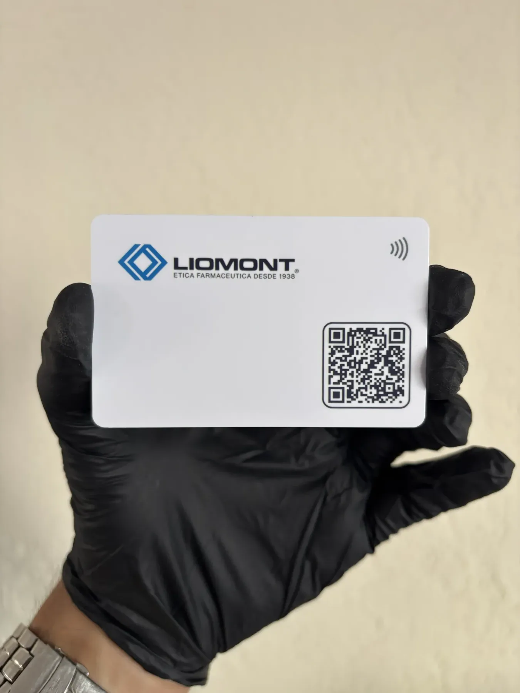
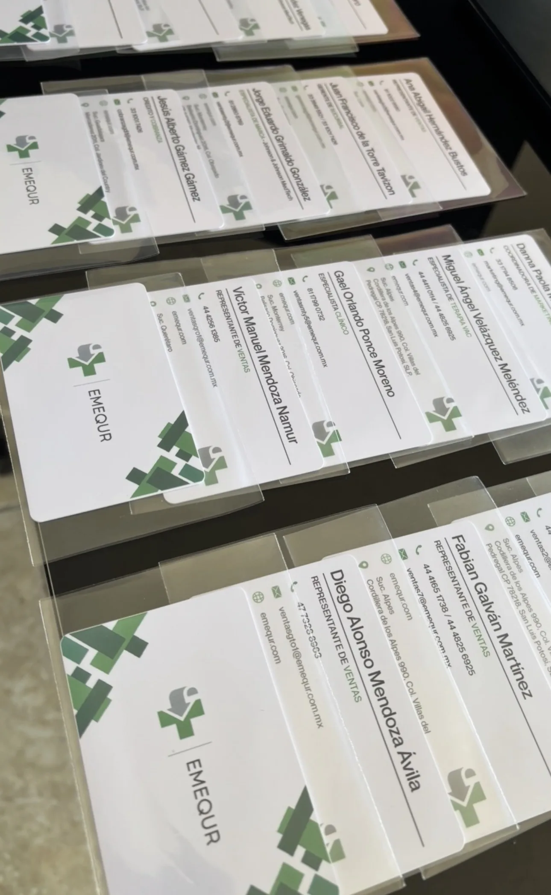
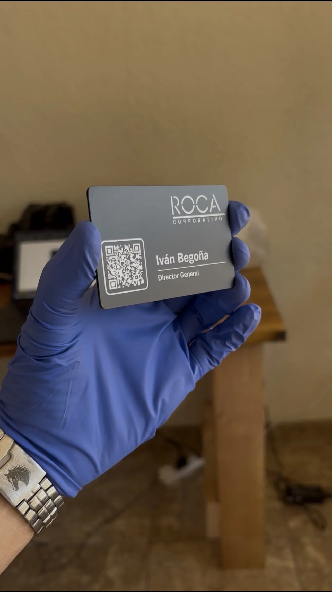

Reseñas
Clientes que ya recibieron sus tarjetas NFC TapLoop y comparten su experiencia.

El proceso fue muy claro y la tarjeta quedó justo como la necesitaba para presentar mi negocio.

Nos gustó mucho el acabado. La tarjeta se siente profesional y el QR quedó limpio.
La demostración ayudó bastante; todo llegó listo para empezar a compartir el perfil.

La tarjeta metálica tiene muy buena presencia. Se nota diferente cuando la entregas.

Muy buen seguimiento desde el diseño hasta la entrega. La tarjeta quedó fiel a la marca.

La impresión quedó nítida y nos ayudó a modernizar la forma de compartir contacto.
Muy práctico para eventos. La gente escanea o acerca el celular y entiende rápido.

El acabado metálico se ve elegante y el perfil digital quedó fácil de actualizar.
La usamos con clientes nuevos y da una primera impresión mucho más cuidada.

Nos resolvieron dudas rápido y la tarjeta llegó lista para usar con nuestro perfil.
La tarjeta se siente sólida y el grabado le da un toque premium al contacto.

Quedó perfecta para reuniones. Es fácil compartir datos sin depender de tarjetas impresas.
El diseño se ve limpio y la experiencia al acercar el celular funciona muy bien.

Nos encantó que todo quedara personalizado y alineado con los colores de la empresa.
Buena atención y muy buen resultado final. La tarjeta destaca desde el primer contacto.

La metálica se siente de calidad y el perfil digital quedó muy completo.
Fue una buena inversión para networking. Se ve moderna y es fácil de usar.

La tarjeta llegó bien presentada y lista para compartir WhatsApp, correo y redes.
Excelente opción para presentarse con clientes. La tarjeta se siente formal y diferente.
El perfil quedó ordenado y la tarjeta ayuda a que no se pierda la información de contacto.
Nos gustó el resultado final. Se ve profesional y hace más fácil compartir toda la información.